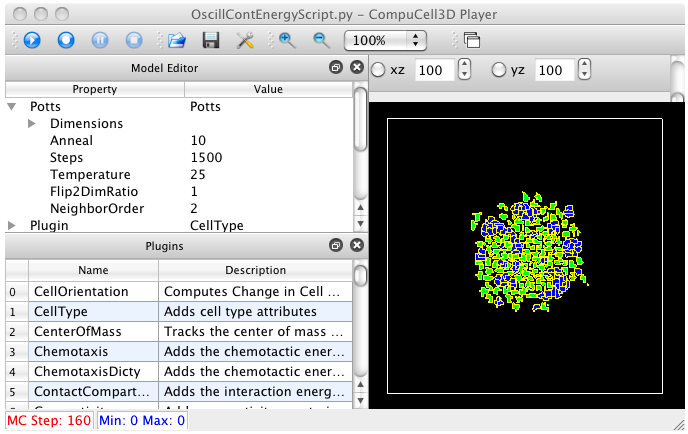

From: Ryan Roper Date: November 26, 2009 12:11:50 PM EST To: "Heiland, Randy" Subject: Re: soslib sources
Great! This is really good news.
And about contactEnergies.txt, that's actually a file that my python script produces. I had it print out contact energies to compare with the results of a previous simulation that I did.
Thanks a lot. And have a happy Thanksgiving.
Ryan
On Thu, Nov 26, 2009 at 2:53 AM, Randy Heiland wrote:
Ryan,
To my amazement, this actually worked the first time! (well, it seemed to work anyway - see attached pic). One (Unix) oddity that I did notice is that it creates an output file called: soslib\examplesSoslib\cc3d\OscillContactEnergies\contactEnergies.txt
(wherever you create the "\", we'll eventually want to make "/" for non-Windows platforms).
Anyway, this was a nice Thanksgiving Day surprise (I was expecting turkey :) -- thanks!
-Randy

On Nov 25, 2009, at 4:34 PM, Ryan Roper wrote:
Try copying /bin, /lib, and /examplesSoslib into a cc3d/soslib directory. Then /OscillContactEnergies from the SVN download will go in the examplesSoslib/cc3d directory and /pythonClasses from the SVN download will go in the cc3d/soslib directory that you create.
Hopefully that should do it.
Ryan
On Wed, Nov 25, 2009 at 1:29 PM, Randy Heiland wrote:
So, from the stuff that I just built, do I just need to copy the /lib dir into a cc3d/soslib dir, or more than /lib?:
heiland@mini:~/dev/Glazier/soslibPy$ ls CMakeCache.txt examplesSoslib/ post_install_tasks/ src/ CMakeFiles/ include/ python/ testsSoslib/ Makefile install_manifest.txt runSoslibExample.sh* cmake_install.cmake lib/ runSoslibPythonExample.sh*
heiland@mini:~/dev/Glazier/soslibPy$ ls lib/ libsbml.a libsundials_cvodes.dylib@ libsundials_nvecserial.dylib@ libsbml.dylib@ libsundials_ida.dylib@ python/ libsoslib.dylib* libsundials_kinsol.dylib@
On Nov 25, 2009, at 4:21 PM, Ryan Roper wrote:
Hi Randy,
I'd be interested to see if you can get this oscillating contact energies simulation, that I wrote, to work. You'd have to put the soslib stuff, that you just built, into a folder called soslib in the CC3D root directory. Then I've got two folders that you'd have to add to the soslib stuff.
Download the following folder and add it to the soslib folder: svn://sys-bio.org/SVN/rtroper/CompuCell3D/soslib/pythonClasses
Download the following folder and add it to the soslib/examplesSoslib/cc3d folder: svn://sys-bio.org/SVN/rtroper/CompuCell3D/soslib/examplesSoslib/cc3d/OscillContactEnergies
Then, in CC3D, open the following python file: OscillContEnergyScript.py
Right now, CC3D doesn't seem to find the binaries for soslib (e.g. libsoslib.dylib and its dependencies in the bin folder - also, it may or may not find _soslibPy.so in the lib/python folder). I've just been copying and pasting whatever binaries I need into the root CC3D folder. I asked Maciek (but haven't heard back, yet) if there is some batch or script file (such as runScript.bat) where I can add the appropriate paths to the binaries. At one point, I did this and it didn't seem to work. If you have any insight about this, I'd appreciate it.
Anyway, if that simulation runs then that's a good sign.
Ryan
On Wed, Nov 25, 2009 at 12:56 PM, Randy Heiland wrote: Yes and yes. Thanks!
I guess the next question is - how do we incorporate/test soslib and cc3d? We have a user awaiting these for OSX 10.6.
-Randy
On Nov 25, 2009, at 3:31 PM, Ryan Roper wrote:
Hi Randy,
Try the following:
runSoslibPythonExample.sh -s examplesSoslib/soslibPyTest.py -i examplesSoslib/sbmlModels/testModel.xml runSoslibPythonExample.sh -s examplesSoslib/SLPyObjectsTest.py -i examplesSoslib/sbmlModels/testModel.xml
I'll be interested to know if those work.
Hope all is well,
Ryan
On Wed, Nov 25, 2009 at 11:55 AM, Randy Heiland wrote: Hi Ryan,
I think I've got these built for OSX 10.6 and was wondering how I go about testing?
I have: heiland@mini:~/dev/Glazier/soslibPy$ ls CMakeCache.txt examplesSoslib/ post_install_tasks/ src/ CMakeFiles/ include/ python/ testsSoslib/ Makefile install_manifest.txt runSoslibExample.sh cmake_install.cmake lib/ runSoslibPythonExample.sh
And I did the following, which looks like some degree of success:
heiland@mini:~/dev/Glazier/soslibPy$ sh runSoslibExample.sh /Users/heiland/dev/Glazier/soslibPy/testsSoslib/xmlModels/ExponentialGrowth.xml
N J0 compartment x r 0 100 5 1 0 0.05 1 105.127 5.25636 1 0 0.05 2 110.517 5.52585 1 0 0.05 3 116.183 5.80917 1 0 0.05 4 122.14 6.10701 1 0 0.05 5 128.403 6.42013 1 0 0.05 6 134.986 6.74929 1 0 0.05 7 141.907 7.09534 1 0 0.05 8 149.182 7.45912 1 0 0.05 9 156.831 7.84156 1 0 0.05 10 164.872 8.24361 1 0 0.05
However, how do I test the Python stuff?
heiland@mini:~/dev/Glazier/soslibPy$ sh runSoslibPythonExample.sh /Users/heiland/dev/Glazier/soslibPy This is python script This is modelFile opts= [('-s', '-i')] args= [] o= -s a= -i _scriptFileName= /Users/heiland/dev/Glazier/soslibPy/-i Traceback (most recent call last):
File "/Users/heiland/dev/Glazier/soslibPy/examplesSoslib/runScript.py", line 6, in <module> execfile(addPaths._scriptFileName)
IOError: [Errno 2] No such file or directory: '/Users/heiland/dev/Glazier/soslibPy/-i'
thanks, Randy (and hope you & your family have an enjoyable Thanksgiving!)
On Nov 12, 2009, at 12:14 PM, Ryan Roper wrote:
Hello All,
You can download the sources for soslib and sundials 2.3.0 from the following: (1) svn://sys-bio.org/SVN/rtroper/soslib-source/soslibPy (2) svn://sys-bio.org/SVN/rtroper/sundials-2.3.0
Also, go to the libSBML website and download mac binaries for libSBML. I think I linked against libSBML 3.4.0. You could probably link to older versions, but not 4.0 or newer. For sundials 2.3.0, there are cmake files with the svn download above. I haven't run into problems building sundials. So when you've installed libSBML and built sundials 2.3.0, then you can open up the cmake files for soslib in the cmake user interface. Just make sure that you change the default library and header paths so that it'll find libSBML, sundials and python.
I'm trying to think if there are any important details you need to know to build everything. Let me know what questions you have and if you run into obstacles.
Thanks,
Ryan
On Thu, Nov 12, 2009 at 8:45 AM, Maciej Swat wrote: HI Ryan
Could you forward us the latest soslib sources and dependencies? I know there is a specific sundial version that has to be used with soslib. If you could send Randy and Benji some info on this that would be great